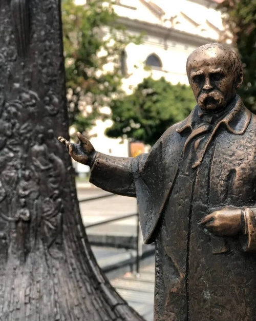
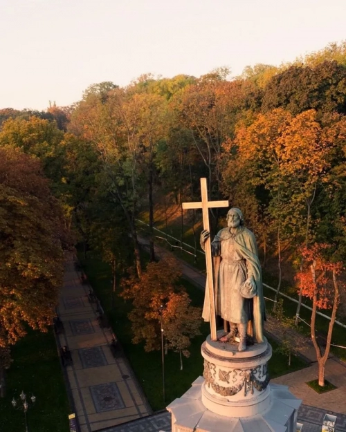

Україна - держава з багатовіковою історією та культурою. У кожному регіоні є свої визначні пам'ятки - перлини української землі. Це справжній скарб, наша гордість і надбання. До наших днів збереглися середньовічні фортеці, палаци та садиби, стародавні монастирі та храми (у деяких з них і понині проводяться служби), багато інших унікальних архітектурних витворів мистецтва, що навіки прославили своїх майстрів. З усіх куточків земної кулі приїжджають сюди туристи, щоб побачити наші безцінні скарби. Українська земля славиться природною красою - Карпатськими горами і лісами, Шацькими озерами, мальовничими кримськими пейзажами, сольовими печерами та озерами, відомими своїми лікувальними властивостями. Безперечно, у кожній країні є свої перлини. Ніхто не відмовляє вас їздити в Туреччину, Єгипет та інші країни. Україна сповнена своїми дивами. Подорожуючи по своїй землі, ми відкриємо для себе багато нового та цікавого. Палац Адольфа Грохольського (палац Терещенків), Червоне Зведений у 19 столітті власником села, шляхтичем Адольфом Грохольським. Тоді будівля була набагато скромніша. Свого розквіту комплекс досяг, коли село і палац викупив відомий український підприємець Микола Терещенко і його брат авіаконструктор Федір Терещенко. Тут добудували фонтан, сади і парки та навіть – авіамайстерню. Сам палац розширили. Тоді цю пам'ятку архітектури вважали чи не найкращим прикладом неоготики. Після 1917 року комплекс переходив з рук у руки. Тут був і притулок, і ПТУ. Нині у колишньому палаці, у вцілілих кімнатах, мешкають черниці. Собор Святого Миколая, Вижняни Перша згадка про собор датується 1400 роком. Найбільша цінність храму – фрески. Більшість з них – з 1940-х років. Тобто створювали їх у буремні роки Другої світової війни. Стародавній вівтар, ікони, орган – все підкреслювало велич храму. Та час і недогляд зробили своє. У радянські часи собор Святого Миколая був складом. Відтак храм розграбовано, від органу залишився тільки каркас, руйнуються і фрески. Деякі потребують негайної реставрації. Не полишаючи надії на відновлення, собором опікується місцевий священник.
 